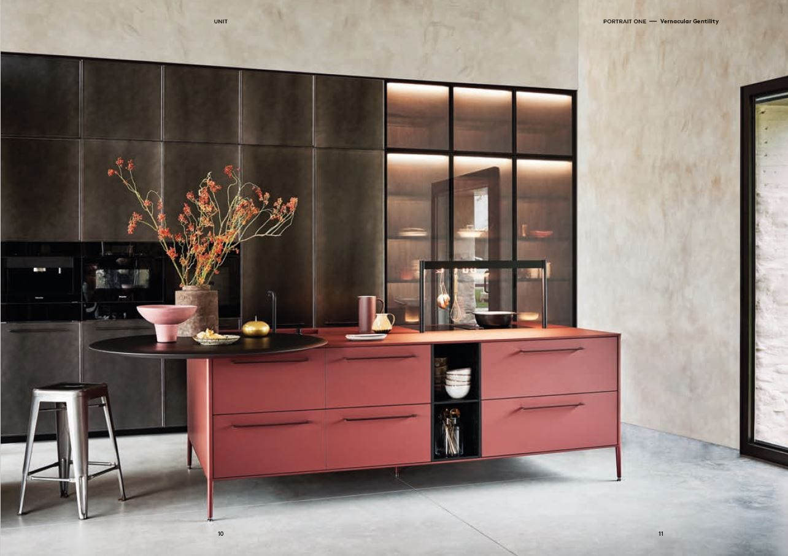
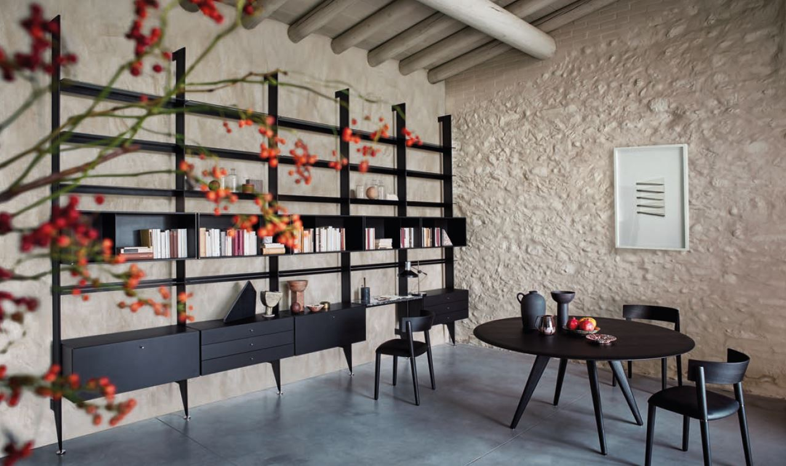
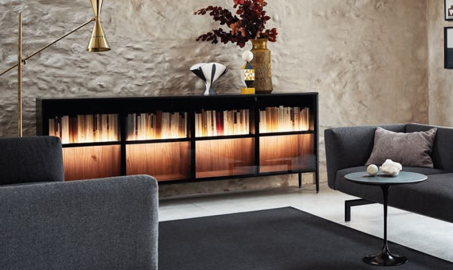
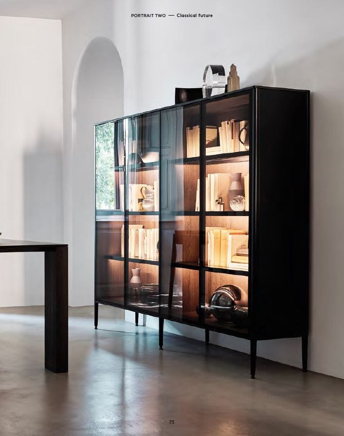
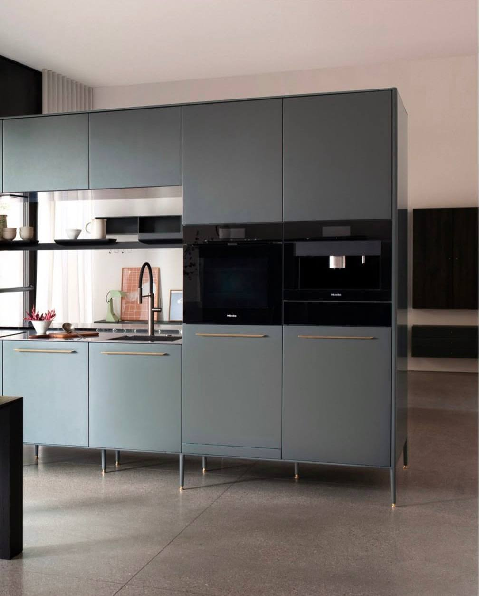
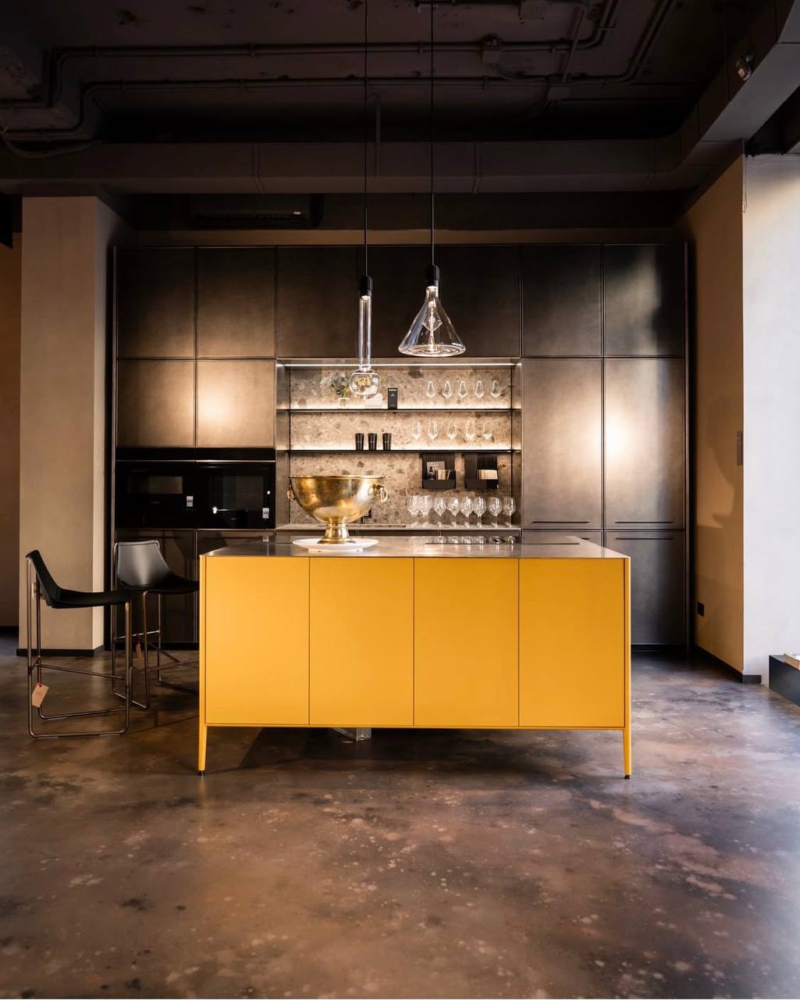

Unit
Design by García Cumini
Unit — кухонный остров нового поколения, построенный на алюминиевой конструктивной раме. Приподнятая над полом структура создаёт ощущение лёгкости и визуально освобождает пространство, превращая кухню в архитектурный объект интерьера.
Система Unit Pocket органично соединяет кухню с жилой зоной: раздвижные панели скрывают рабочую поверхность, позволяя пространству свободно перетекать из одной функции в другую. Регулируемые ножки с отделкой Champagne Brass подчёркивают благородство материалов.
Широкий выбор отделок — от матового лака до натурального дерева и камня — позволяет адаптировать Unit под любой характер интерьера: от строгого минималистичного до тёплого и фактурного.


Свобода — самое важное в жизни: свобода меняться, адаптироваться, открывать новые пути, новые культуры, новых людей. Свобода творить, свобода познавать себя. Технологии помогают в этом поиске. И всё же нам всем нужна точка опоры — тёплое место, откуда можно выходить и куда можно возвращаться. В конце любого пути мы возвращаемся домой. Unit создан дизайнерами García Cumini — студией, в которой итальянская точность встречается со страстью к жизни во всей её полноте. Алюминиевая рама, парящий над полом корпус, материалы с характером — это принципы, из которых складывается целое.



Nomadic
Я всегда в движении. Люблю менять стили, цвета, пейзажи, своё видение мира.
Путешествую налегке — единственный мой багаж это опыт. Unit Pocket соединяет кухню с жилой зоной, позволяя пространству свободно перетекать из функции в функцию.
